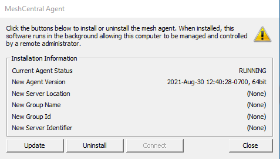

Troubleshooting¶
Server Troubleshooting Script¶
If you've asked for help in #support please run this, and send a screenshot at the top of the thread created for troubleshooting your issue.
Blur your domains if you desire privacy.
wget -N https://raw.githubusercontent.com/amidaware/tacticalrmm/master/troubleshoot_server.sh
chmod +x troubleshoot_server.sh
./troubleshoot_server.sh
Make sure DNS (name resolution) was setup properly¶
From the agent¶
Open command prompt
ping rmm.example.com
ping api.example.com
ping mesh.example.com
The IP address for all 3 should reflect your Tactical RMM server
Problems after new server install¶
In the very unlikely event you have issues after install please wipe the box and install again (following all the steps including downloading the install script but not running it yet) use the following command which will log the install progress and if you continue to have issues will assist with support of the installation.
bash -x install.sh 2>&1 | tee install.log
Note
Logging of installs isn’t desirable as it logs extremely sensitive information which is why this isn’t done by default! Do not post the raw log publicly only provide it if requested and then by dm only. Authorized users in Discord are: @BurningTimes#1938 @sadnub#6992 @dinger1986#1734 @silversword#9652
"Bad credentials" error when trying to login to the Web UI¶
If you are sure you are using the correct credentials and still getting a "bad credentials" error, open your browser's dev tools (Ctrl+Shift+J on chrome) and check the Console tab to see the real error.
It will most probably be a CORS error which means you need to check your DNS settings and make sure whatever computer you're trying to access the UI from resolves your 3 subdomains to the correct IP of the server running the RMM (public IP if running in the cloud, or private IP if running behind NAT).
If you see an error about SSL or certificate expired, then your Let's Encrypt cert has probably expired and you'll need to renew it.
Refer to the Let's Encrypt cert renewal instructions here
Agents not installing or updating¶
The most common problem we've seen of agents not installing or updating is due to Antivirus blocking the updater executable.
Windows Defender will 100% of the time block the updater from running unless an exclusion is set.
Refer to the Agent Installation instructions for AV exceptions to set and manually doing an agent update with logging to troubleshoot further.
Agents will also not automatically update if they are too old.
Since Tactical RMM is still in alpha and the developers makes breaking changes pretty frequently, there is no promise of backwards compatibility.
If you have agents that are relatively old, you will need to uninstall them manually and reinstall using the latest version.
The mesh installer is created at time of install. Make sure it's working, run on TRMM server
Check TRMM connection to MeshCentral
/rmm/api/env/bin/python /rmm/api/tacticalrmm/manage.py check_mesh
sudo docker-compose exec tactical-backend python manage.py check_mesh
Collect Update debug logs for troubleshooting agents that don't update
Agents not checking in or showing up / General agent issues¶
These are nats problems. Try quickfix first:
from Admin Web Interface¶
First, reload NATS from tactical's web UI:
Tools > Server Maintenance > Reload Nats Configuration
If that doesn't work, check each part starting with the server:
Server SSH login¶
Reload NATS:
/rmm/api/env/bin/python /rmm/api/tacticalrmm/manage.py reload_nats
sudo systemctl restart nats.service
Look at nats service errors (make sure it's running)
sudo systemctl status nats.service
If nats isn't running see detailed reason why it isn't:
sudo systemctl stop nats.service
nats-server -DVV -c /rmm/api/tacticalrmm/nats-rmm.conf
Fix the problem, then restart nats.
sudo systemctl restart nats.service
From Agent Install¶
Open CMD as admin on the problem computer and stop the agent services:
net stop tacticalrmm
Run the tacticalrmm service manually with debug logging:
"C:\Program Files\TacticalAgent\tacticalrmm.exe" -m svc -log debug -logto stdout
This will print out a ton of info. You should be able to see the error from the debug log output.
Please then copy/paste the logs and post them either in our Discord support chat, or create a github issue.
If all else fails, simply uninstall the agent either from control panel or silently with "C:\Program Files\TacticalAgent\unins000.exe" /VERYSILENT and then reinstall the agent.
All other errors¶
First, run the update script with the --force flag.
This will fix permissions and reinstall python/node packages that might have gotten corrupted.
./update.sh --force
Check the debug log from the web UI: File > Debug Log
Open your browser's dev tools (Ctrl+Shift+J on chrome) and check the Console tab for any errors
Check all the systemd services that the rmm uses to function and check to make sure they're all active/running and enabled:
sudo systemctl status rmm.service
sudo systemctl status daphne.service
sudo systemctl status celery.service
sudo systemctl status celerybeat.service
sudo systemctl status nginx.service
sudo systemctl status nats.service
sudo systemctl status nats-api.service
sudo systemctl status meshcentral.service
sudo systemctl status mongod.service
sudo systemctl status postgresql.service
sudo systemctl status redis-server.service
or you can use systemctl --failed to see any failed services on your machine.
Read through the log files in the following folders and check for errors:
/rmm/api/tacticalrmm/tacticalrmm/private/log
/var/log/celery
Using Cloudflare DNS¶
-
rmm.example.com can be proxied.
-
api.example.com can NOT be proxied.
-
mesh.example.com can be proxied with the caveat that Mesh checks the cert presented to the agent is the same one on the server. I.e. no MITM. You'll need to copy Cloudflare's edge cert to your server if you want to proxy this domain.
If you're getting Invalid group id at the end of the install you're probably doing something wrong/wrong IP for api.
Testing Network Connectivity between agent and server¶
Use powershell, make sure you can connect to 443 and 4222 from agent to server:
Test-NetConnection -ComputerName api.example.com -Port 4222
Test-NetConnection -ComputerName api.example.com -Port 443
Test-NetConnection -ComputerName rmm.example.com -Port 443
Check your SSL certs to make sure they are what they should be (no proxy stuff): https://www.digicert.com/help/
Are you trying to use a proxy to share your single public IP with multiple services on 443? This is complicated and unsupported by Tactical RMM, test your setup.
Take Control or Remote Background missing button / can't connect¶
This is a MeshCentral Connection problem
- Don't use Firefox (test in vanilla Chrome first)
- Open
mesh.domain.comand see if you see the agent is there - If you don't see your agent (or it's offline), restart TRMM server (or service)
- Restart Mesh Agent on client PC.
- Check again. Still not appearing in
mesh.domain.comin mesh goto "My Server" > Trace tab > Click tracing button > Check MeshAgent traffic. - Restart Mesh Agent on client PC. You should see something in trace like

- If you don't, you have firewall/connectivity issues (open
mesh.domain.comfrom agent and troubleshoot. You aren't using a proxy right?)
Need to recover your mesh token?¶
Login to server with SSH and run:
node /meshcentral/node_modules/meshcentral --logintokenkey
Mesh Agent Not Connecting to server¶
When agents don't show up in your mesh console (after logging into https://mesh.EXAMPLE.COM), and all data is blank. Your AV has most likely blocked the agent.

Error 500¶
These are always logged to /rmm/api/tacticalrmm/tacticalrmm/private/log/django_debug.log use this to check.